There’s more differentiation rules (product, quotient, chain rule).
They’re fun, but we won’t be reviewing them.
Day 5: Bren Math Workshop
Carmen Galaz García, Ph.D.
Bren School of Environmental Science & Management
Summary of differentiation rules
| Differentiation Rule | \(f'(x)\) notation | \(\frac{d}{dx}\) notation |
|---|---|---|
| Constant Rule | \(f(x)=c \Rightarrow f'(x)=0\) | \(\frac{d}{dx}[c]=0\) |
| Power Rule | \(f(x)=x^n \Rightarrow f'(x)=n x^{n-1}\) | \(\frac{d}{dx}[x^n]=n x^{n-1}\) |
| Sum Rule | \((g(x)+h(x))'=g'(x)+h'(x)\) | \(\frac{d}{dx}[g(x)+h(x)]=\frac{d}{dx}g(x)+\frac{d}{dx}h(x)\) |
| Difference Rule | \((g(x)-h(x))' = g'(x)-h'(x)\) | \(\frac{d}{dx}[g(x)-h(x)]=\frac{d}{dx}g(x)-\frac{d}{dx}h(x)\) |
| Constant Multiplier Rule | \((c\cdot g(x))'=c\,g'(x)\) | \(\frac{d}{dx}[c\,g(x)]=c\,\frac{d}{dx}g(x)\) |
And two special derivatives: \(\frac{d}{dx}(e^x) = e^x\) and \(\frac{d}{dx}ln(x)=\frac{1}{x}\).
There’s more differentiation rules (product, quotient, chain rule).
They’re fun, but we won’t be reviewing them.
Derivatives practice
Solve individually and then check with a partner.
\[ \begin{align} &\text{A) } y=3x^2 & &\text{B) }h(x)=2x(x^2 + 3x) & &\text{C) }g(y)=2\sqrt{y} - e^y + 20\ln(y) \end{align} \]
\[S(t) = 0.5t^2 + 4t, \text{ where $t$ is years since 2015.}\]
Evaluate \(S(6)\). What does this value mean in context? State it as a full sentence, with units.
Find \(S'(t)\).
Evaluate \(S'(6)\). What does this value mean in context? State it as a full sentence, with units.
Derivatives solution
\[ \begin{align} &\text{A) } y=3x^2 & &\text{B) }h(x)=2x(x^2 + 3x) \end{align} \]
\(y' = 3\cdot 2x^{(2-1)} = 6x\)
First expand: \(h(x) = 2x\cdot x^2 + 2x \cdot 3x = 2x^3+6x^2\)
Then differentiate term by term: \(h'(x) = 2\cdot 3x^{(3-1)} + 6\cdot 2x^{(2-1)} = 6x^2+12x\)
Derivatives solution
1,C) Find the derivative of this function
\[ g(y)=2\sqrt{y} - e^y + 20\ln(y) \]
Rewrite \(\sqrt{y}\) as \(y^{1/2}\):
\[ \begin{align} g(y) &= 2y^{1/2}-e^y+20\ln(y)\\ g'(y) &= 2\cdot\frac{1}{2}y^{(1/2-1)} - e^y + 20\cdot\frac{1}{y}\\ &= \frac{1}{\sqrt{y}} - e^y + \frac{20}{y} \end{align} \]
Derivatives solution
\[S(t) = 0.5t^2 + 4t\]
where \(t\) is years since 2015.
We have that \(S(6) = 0.5(6)^2 + 4*6 = 42\). This means that in 2021 (6 years after the program began), the city’s installed solar capacity was 42 MW.
\[ S'(t) = t + 4 \]
\[ S'(6) = 6+4 = 10 \]
In 2021 (6 years after the program began), the city’s installed solar capacity was increasing at a rate of 10 MW per year.
How do we find the area under this curve?
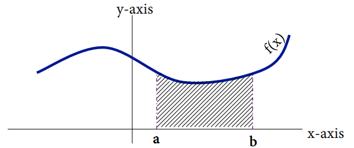
How do we find the area under this curve?
Areas of rectangles are easy to find. We can approximate the area by adding the area of rectangles under the curve.
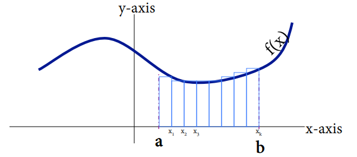
Example
Approximate the area under the curve from \([-3,3]\) with \(\Delta x=2\) and \(k=3\).
✏️
| x | y |
|---|---|
| -3 | 71 |
| -1 | 73 |
| 1 | 51 |
| 3 | 53 |
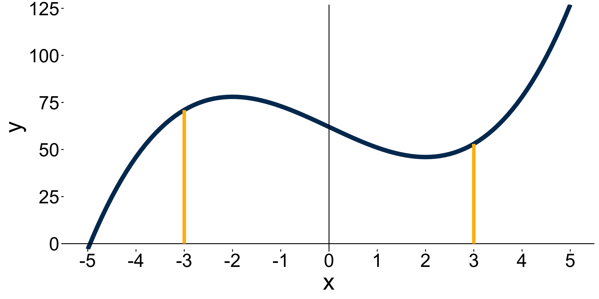
Example
Approximate the area under the curve from \([-3,3]\) with \(\Delta x=2\) and \(k=3\).
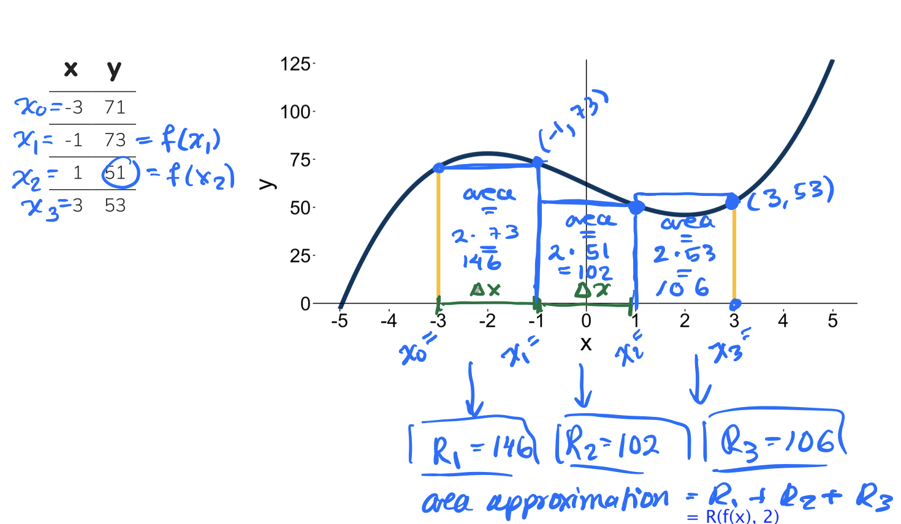
Riemann sums
Divide the interval \([a,b]\) into \(k\) subintervals of width \(\Delta x\).
The endpoints of those intervals will give you a series of \(x\) values: \(x_0, x_1, \ldots, x_k\).
Multiply \(f(x_1)\Delta x\) to get the the area of the first rectangle.
Repeat the same steps above, now starting with \(x_2\) as the bottom right corner of the next rectangle. Repeat until you cover the area with rectangles of width \(\Delta x\).
Sum up the area of all \(k\) rectangles.
\[ R(f(x), \Delta x)= \underbrace{f(x_1)\Delta x+f(x_2)\Delta x+...f(x_k)\Delta x}_{\text{Sum of area of rectangles with width $\Delta(x)$} } \]
This is called a Riemann Sum.
Finer and finer Riemann sums
What if we try to make \(\Delta x\) (the width of the rectangles) really small? So we let \(\Delta x \to 0\). This will make the number of rectangles under the curve go to infinity.
Our estimation of the area will get better and better with more rectangles.
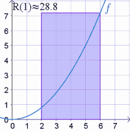
Finer and finer Riemann sums
What if we try to make \(\Delta x\) (the width of the rectangles) really small? So we let \(\Delta x \to 0\). This will make the number of rectangles under the curve go to infinity.
Our estimation of the area will get better and better with more rectangles.
Take the area calculation we did before, but let \(\Delta x \to 0\) \[ \large \begin{align} \text{True Area} &= \lim_{\Delta x \to 0}R(f(x),\Delta x) \\ &= \int^b_af(x)dx \end{align} \]
We formally call this the integral of \(f(x)\) from \(a\) to \(b\) with respect to \(x\).
How do we calculate integrals?
Taking infinite sums is impossible by hand
Luckily, integrals and derivatives are related in a very useful way:
If we integrate a derivative, we should get the same function back as the original vice-versa:
\[ \begin{align} \text{Differentiation is the inverse of integration} &: \hspace{13cm} \end{align} \]
\[ \begin{align} \text{Integration is the inverse of differentiation} &: \hspace{13cm} \end{align} \]
How do we calculate integrals?
Taking infinite sums is impossible by hand
Luckily, integrals and derivatives are related in a very useful way:
If we integrate a derivative, we should get the same function back as the original vice-versa:
\[ \begin{align} \frac{d}{dx}\left[\int f(x)dx\right]&=f(x) &\text{Differentiation is the inverse* of integration} \end{align} \]
\[ \begin{align} \int f'(x)&=f(x)+C &\text{Integration is the inverse* of differentiation} \end{align} \]
To find the integral of \(\int f(t) dt\) we need to find a function \(F(x)\) whose derivative is \(f(x)\).
*The conditions for these to hold are more nuanced (see Fundamental theorem of calculus). But for our practical purposes we can think about it this way.
Where did that \(C\) come from?
Example
✏️
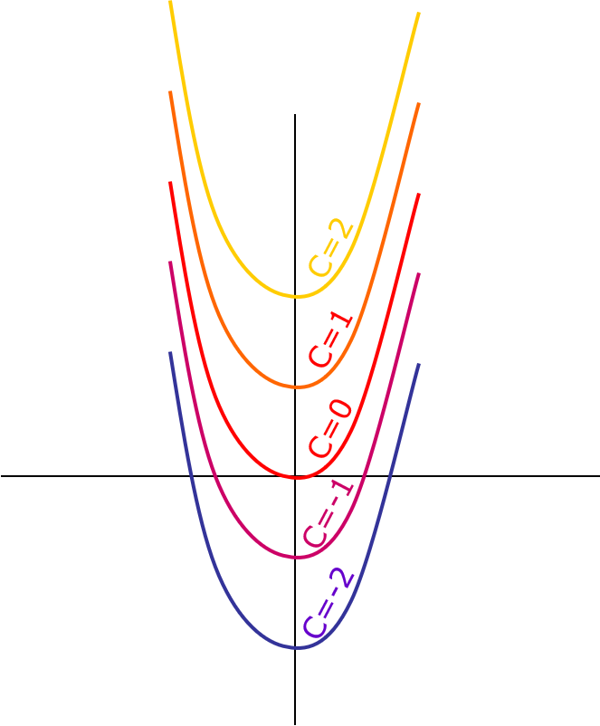
Where did that \(C\) come from?
Example
Find \(\int 2x-4\).
To find \(\int 2x-4\) we need to find a function whose derivative is \(2x-4\). What could it be?
If we integrate, we’ll have \(\int 2x-4 = x^2-4x+C\).
There is no way of knowing what the \(C\) should be without additional information
\(C\) is the \(x\)-intercept and we would have we have to solve for it with an initial value problem.
What is integration useful for?
Solving differential equations
But also… integration can be tough
Before integrating ask yourself:
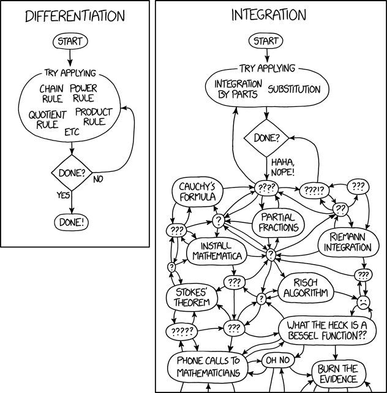
Notation
When you take an integral, the function in it can be in terms of any variable. This is just notation and it does not affect the result of the integration:
\[\int f(x) dx = \int f(t) dt = \int f(u) du.\]
Integration rules (1)
Sum and Difference Rules
✏️
Integration rules (1)
Sum and Difference Rules
The integral of a sum is equal to the sum of the integrals:
\[ \int[f(x)+g(x)]dx=\int f(x)dx+\int g(x)dx \]
The integral of the difference is equal to the difference of the integrals:
\[\int[f(x)-g(x)]dx=\int f(x)dx-\int g(x)dx \]
Integration rules (2)
Constant Rule
✏️
Integration rules (2)
Constant Rule
When a function is mulitplied by a constant, the constant can be taken out to multiply the integral:
\[ \int cf(x)dx=c\int f(x)dx \]
Integration rules (3)
Power Rule
\(\int x^n dx\) is a function whose derivative is \(x^n\).
What could \(\int x^n dx\) be?
✏️
Integration rules (3)
\(\int x^n dx\) is a function whose derivative is \(x^n\).
What could \(\int x^n dx\) be?
Power Rule
\[ \int x^ndx=\frac{x^{n+1}}{n+1}+C \text{, n}\ne -1 \]
Examples
✏️ Evaluate the following integrals.
Exercise
✏️ Evaluate the following integral:
\[\int x^3-4x dx\]
Example & exercise solutions
Initial value problems
To find the \(C\) term in the integral, we need extra information
Often times that comes from being given an initial value
This means being given some value of the function, e.g. \(y(0)=a\) or \(y(12)=b\)
We use this information to solve for what \(C\) should be
Example
✏️ The marginal cost of producing \(x\) units of a product is:
\[ \frac{dC}{dx}=25-0.02x \]
Where \(C\) is the cost (in dollars), and \(x\) is the number of units produced. Given that producing 2 units of product costs $10, what is the complete cost equation?
Example
✏️ The marginal cost of producing \(x\) units of a product is:
\[ \frac{dC}{dx}=25-0.02x \]
Where \(C\) is the cost (in dollars), and \(x\) is the number of units produced. Given that producing 2 units of product costs $10, what is the complete cost equation?
We can integrate to find the original cost function \(C\):
\[C(x) = \int \frac{dC}{dx} dx = \int 25-0.02x.\]
Then: \[ \begin{align} \int 25-0.02x =&25x-\frac{.02x^2}{2}+D & \text{Solve with Power Rule}\\ 10&=25(2)-\frac{0.02(2)^2}{2}+D &\text{ Sub in $x=2$}\\ -39.96&=D\\ C(x)&=25x-\frac{0.2x^2}{2}-39.96 \end{align} \]
Let’s take a 10 minute break
image: Flaticon.com
Exercise
A model for the rate of change in ozone concentrations over time between 1962-1984 is given by \(\frac{dC}{dt}=2t+20\), where \(C\) is the ozone concentration (ppm) and \(t\) is the elapsed time in years since 1962. Given that in 1964 the ozone concentration was 30 ppm, what was the ozone concentration in 1982?
✏️
Exercise
A model for the rate of change in ozone concentrations over time between 1962-1984 is given by \(\frac{dC}{dt}=2t+20\), where \(C\) is the ozone concentration (ppm) and \(t\) is the elapsed time in years since 1962. Given that in 1964 the ozone concentration was 30 ppm, what was the ozone concentration in 1982?
Given:
\[\frac{dC}{dt} = 2t + 20\]
Integrate:
\[\int dC = \int (2t + 20)\,dt\]
\[C(t) = t^{2} + 20t + D\]
Initial condition:
\[C(2)=30 \ \ \text{(since 1964 is 2 years after 1962)}\]
\[30 = 2^{2} + 20\cdot 2 + D\]
\[D = 30 - 44 = -14\]
Thus:
\[C(t) = t^{2} + 20t - 14\]
Evaluate at \(t=20\) (1982):
\[C(20) = 20^{2} + 20\cdot 20 - 14\]
\[= 400 + 400 - 14\]
\[= 786 \text{ ppm}\]
Indefinite vs. definite integrals
\[ \int f(x)dx \]
This means there are no integration bounds and we need initial values to find integration constants.
✏️
Indefinite vs. definite integrals
\[ \int f(x)dx \]
This means there are no integration bounds and we need initial values to find integration constants.
\[\int_a^b f(x) dx.\]
To find the area under the curve along an interval \([a,b]\), evaluate the antiderivative at the endpoints and subtract them.
✏️ Example
\[ \begin{align} \int^b_axdx &= \frac{1}{2}x^2\Big|^b_a\\ &= \frac{1}{2}(b)^2-\frac{1}{2}(a)^2 \end{align} \]
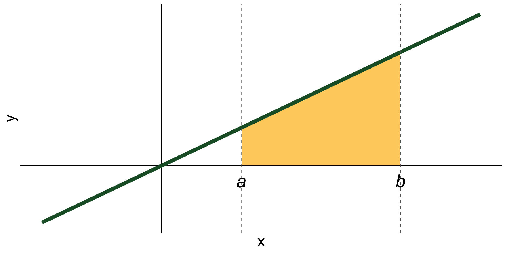
Example
✏️ Evaluate the following integral.
\[\int^2_{-1}3x^2dx\]
Example
✏️ Evaluate the following integral.
\[\int^2_{-1}3x^2dx\]
We have that: \[ \begin{align} \int^2_{-1}3x^2dx &= x^3\Big|^2_{-1}\\ &=(2)^3-(-1)^3 \\ &=9 \end{align} \]
Exercise
Integrate \[\int^4_2\frac{1}{2}x.\] Make a diagram to represent the area this integral represents.
✏️
Solution
We get that
\[\begin{aligned} \int_{2}^{4} \frac{1}{2}x\,dx &= \frac{1}{2}\int_{2}^{4} x\,dx \\[6pt] &= \frac{1}{2}\left[\frac{x^{2}}{2}\right]_{2}^{4} \\[6pt] &= \frac{1}{4}\bigl(4^{2}-2^{2}\bigr) \\[6pt] &= \frac{1}{4}(16-4) \\[6pt] &= 3 \end{aligned}\]
What is a differential equation?
A differential equation is any equation which contains derivatives.
The goal of the differential equation is to find a function that satisfies the equation.
Example
✏️
What is a differential equation?
A differential equation is any equation which contains derivatives.
The goal of the differential equation is to find a function that satisfies the equation.
Example
\[ \text{Solve for $y(x)$ in} \hspace{0.5 cm} y'(x) = y(x) + x. \]
Notation is often simplified as
\[ \text{Solve for $y$ in} \hspace{0.5 cm} y' = y + x. \]
Is a differential equation because we are trying to find the function \(y\) with information about its derivative \(y'\).
Translated as: find a function \(y(x)\) whose derivative equals the function pluse \(x\).
What is a solution to a differential equation?
In a “normal” equation the solutions are a set of values of \(x\).
\[ \text{Solve for $x$ in} \hspace{0.5 cm} x^2 - 4 = 0. \]
How would you check that \(x=2\) is a solution for the equation?
In a differential equation, the solutions are whole functions.
\[ \text{Solve for $y$ in} \hspace{0.5 cm} y' = y + x. \]
How would you check that \(y(x) = -x -1\) is a solution for this differential equation?
Differential equations: vocab
Sometimes functions have more than one variable and we can take partial derivatives with respect to each variable.
\[\frac{df}{dt}=3.2-f(t)\]
\[\frac{\partial B}{\partial t}= \alpha B+0.31x-21.6\]
Order of an ODE
Order: The order of a differential equation is the highest order for any differential expression in the equation
Example:
\(\frac{df}{dt}=3.2-f(t)\) is a first order ordinary differential equation
Differential equations help us understand changing environments
For some natural phenomena it can be easier to describe them in terms of derivatives than give an explicit function.
By specifying how something changes, we are describing a process or behavior over time.
Examples:
Example: Lotka-Volterra (predator-prey) equations
Prey: \(\frac{dN}{dt}=r N- \alpha NP\)
Predator: \(\frac{dP}{dt}=ab NP - mP\)
Where:
What do the different pieces of the equation mean?
Interpretation of prey equation:
\[\frac{dN}{dt}=r N-a NP\]
The pieces:
Interpretation of predator equation:
\[\frac{dP}{dt}=ba NP - m P\]
The pieces:
Or, in pictures:
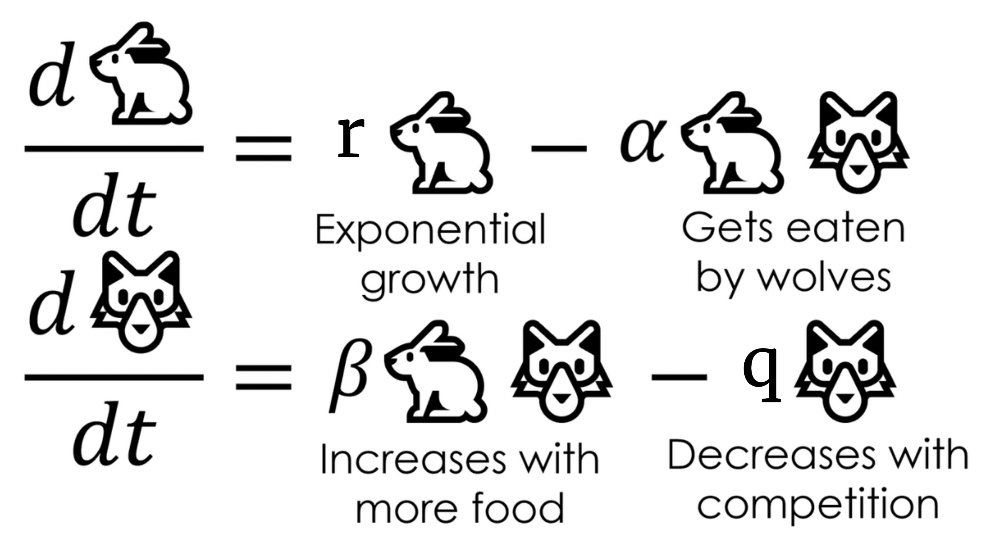
Adapted frrom Christopher Rackauckas, Scientific machine learning: interpretable neural networks that accurately extrapolate from small data. from the Stochastic Lifestyle blog.
Finding \(N(t)\) and \(P(t)\)?
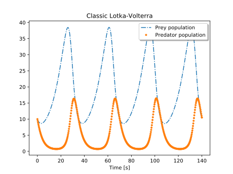
Integration to find approximate solutions. Image: Modelica by Example
Some differential equations can be solved analytically:
✏️
Some differential equations can be solved analytically:
\[\frac{dy}{dx}=y\]
Separate variables and integrate both sides:
\[\int\frac{1}{y}dy=\int1dx\]
Yielding:
\(ln(y)=x\) or \(y=e^x\)
Solving differential equations numerically
Find approximate solutions to differential equations when finding an analytical solution would be really challenging (…which is pretty often).
Instead, computers can numerically approximate solutions by predicting nearby values based on the slope.
There are many methods for solving differential equations numerically. You’ll do it programatically later on.
These materials are an iterative effort
Allison Horst
Ruth Oliver
Nathan Grimes

Carmen Galaz García

Sam Shanny-Csik
Alessandra Vidal Meza

Cella Schnabel
We covered a lot!
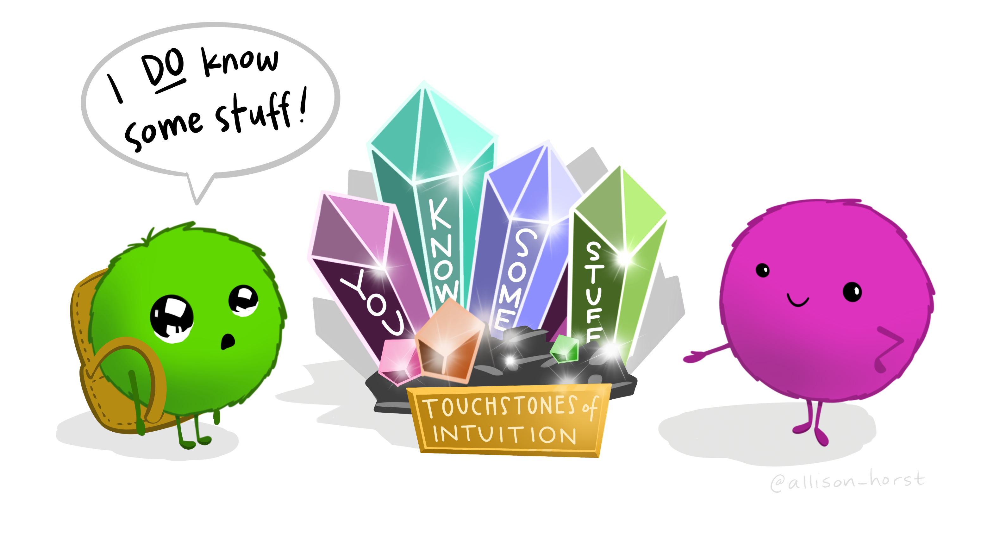
Pleaes fill out the exit survey!
🎉 Have a great Fall Quarter! 🍂